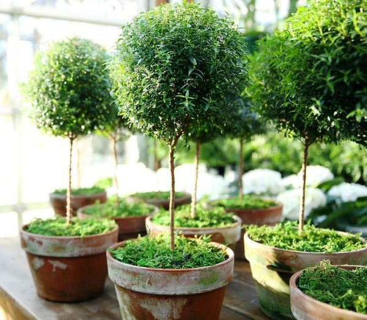

Будь-які кімнатні рослини потребують догляду протягом усього року. Але для того, щоб милуватись не тільки гарним цвітінням, але і запахом та цілковитим здоров’ям кімнатних рослин, необхідно детальніше розібратись у процесі щоденного догляду за ними.
А саме, знати, яке світло потрібно тим чи іншим кімнатним рослинам, якому грунту краще віддати перевагу, а також дізнатись про необхідну частоту поливу.
Основні правила догляду за кімнатними рослинами:
Знаючи умови в яких раніше перебували кімнатні рослини, кожна господарка чи господар з легкістю може перетворити маленький паросток на квітучу рослину.
Обираючи кімнатну рослину, необхідно чітко розуміти, які рослини повністю залежать від постійного догляду протягом усього року, а які ні.
Це необхідно для того, щоб створити ідеальні умови для подальшого їх розвитку.
Якщо в зимовий та осінній період світловий день скорочується, то влітку або восени навпаки збільшується. Ці умови потребують додаткових заходів щодо догляду кімнатних рослин. Деякі рослини, які відчувають нестачу світла, починають тьмяніти, їхні стеблі стоншуються та проріджуються. Таким чином, ті рослини, які стоять на вашому підвіконні або на сонячному балконі, мають більше шансів розростися та розквітнути, аніж ті, які розташовані у темних закутках вашої квартири.
Але, існують і такі кімнатні рослини, які не потребують багато відкритих та агресивних сонячних променів, як, наприклад, орхідея чи шефлера. Данi сорти найбільше полюбляють післяобідне солнце.
Як дізнатись, що кімнатній рослині не вистачає сонячного світла?
Колір стеблів починає тьмяніти або жовтіти.
Листя рослини починає опадати.
Стеблі вашої кімнатної рослини стали довші та тонші.
Сезонні квітучі кімнатні рослини перестали квітнути.
Ріст рослини не збільшується, а навпаки зупиняється.
Ознаки надмірного споживання сонячного світла кімнатними рослинами:
Кімнатна рослина виглядає послабленою. Її листя блідне або навпаки чорніє.
Листя покривається жовтими плямами.
Зменшується ріст рослини.
Рослина відклоняється від сонячних променів.
Листя починає закручуватись.
Правильній вибір ґрунту
Важливим елементом у правильному догляді за кімнатними рослинами є вибір ґрунту.
На сьогоднішній день існує кілька найпоширеніших видів ґрунту, які чудово підійдуть для домашнього квітникарства.
Вибір ґрунту загалом залежить від стану коренів кімнатної рослини.
Так, слабкі корені потребують м'якого ґрунту, в той час як потужні і міцні будуть прекрасно себе відчувати у більш щільному та твердому ґрунті.
Але не завжди вибраний ґрунт має всі необхідні елементи для вирощування здорової кімнатної рослини. Найчастіше необхідно створити власну суміш, використовуючи при цьому деякі важливі компоненти.
Перегній допомагає посилити властивості грунту, наповнюючи його азотом, калієм, фосфором, кальцієм та іншими органічними речовинами.
Листя поліпшує властивості грунту, надаючи при цьому допоміжні органічні речовини та легкий доступ для поглинання води та повітря.
Сфагнум при змішуванні з грунтом надає антибактеріальні властивості, що запобігає розвитку небажаних процесів.
Перліт частіше додається до грунту, щоб зробити його менш щільним, а також для додаткового розпушення. Ці властивості допомагають повітрю та воді швидше проникати до коренів кімнатної рослини.
Не зайвим також буде додати до ґрунту інші поживні речовини та елементи, які містяться у цукрі, гущі вживаної кави, цедрі лимонів або бананових відходів.
Для покращення якості ґрунту нерідко використовують кокосове волокно, хвою або ж навіть пісок. Усі ці елементи допомагають зробити грунт менш щільним та розпушують його до потрібного стану.
Придбати грунт та допоміжні поживні речовини для суміші можно у будь-якому магазині садівництва або на оптових точках. Нерідко можно знайти супутню інструкцію на упаковці з ґрунтом, що допоможе у правильному виборі.
Рекомендації стосовно поливу кімнатних рослин:
Після вибору необхідного типу ґрунту та підібравши найбільш правильне освітлення, треба подбати про полив кімнатних рослин. Однією з найпоширеніших проблем є неправильний полив, який може загрожувати кімнатній рослині не тільки повільним ростом, а й сухістю коренів та листя.
Надмірний полив - потрібен лише для деяких типів кімнатних рослин, які потребують постійного змочування ґрунту. Але потрібно слідкувати за тим, щоб вода не застоювалась на поверхні. Серед рослин, які потребують надмірного поливу, виділяються плющ, лимон та бегонія.
Надлишковий полив - при цьому типі зволоження ґрунт постійно має бути зволоженим, щоб підживлювати кореневу систему кімнатної рослини. Наприклад, азалія відноситься до типу рослин, які потребують надлишкового поливу.
Помірний полив - для того, щоб виростити рослину, яка потребує помірного поливу, необхідно кожного разу перед додаванням води дати верхньому шару ґрунту трішки підсохнути. Усі декоративні кімнатні рослини полюбляють саме такий тип поливу.
,
Рідкий полив - даний тип зволоження не потребує багато зусиль, адже полив кімнатної рослини, яка відноситься до даного типу, необхідно проводити тільки при фазі росту. До таких рослин відносяться гіппеаструм та кактус.
Як правильно пересадити кімнатну рослину
Пересадження кімнатної рослини - це дуже кропіткий процес, який потребує деяких знань в області квітникарства. Періодичність пересаджування рослин залежить від їх росту та віку. Якщо мова йде про молоді кімнатні рослини, то їх слід пересаджувати кожен рік, в той час як дорослі рослини, які вже ростуть більше п'яти років, треба пересаджувати два рази на рік або рідше. Важливу роль також відіграє стан кореневої системи рослини. Якщо корені квітки вже не вміщаються у горщик, - це вірна ознака того, що дана кімнатна рослина вже готова для пересадки. Процесс пересаджування рослин може проводитися будь-коли, але не взимку. Найкращою порою є весна, адже саме тоді кімнатна рослина може швидше адаптуватися до нового горщика.
Як підготуватися до пересадження?
Необхідно підібрати горщик, в якому коренева система буде відчувати себе комфортно. Найчастіше квітникарі обирають горщик на один чи два сантиметра більший ніж попередній.
На дні горщика необхідно зробити дренажні отвори для найкращого проходження води та повітря.
Додайте необхідну грунтову суміш заготовлену заздалегідь. Заповнiть нею горщик наполовину.
Як пересадити кімнатну рослину?
Дістаньте квітку зі старого горщика. Робити це слід акуратно, не травмуючи рослину. Слідкуйте за тим, щоб листя та квіточки залишались неушкодженними.
Струсіть застарілий грунт з кореневої системи. Але не слід струшувати геть усе - залишок старого грунту ніяк не завадить новому.
При необхідності промийте корені, якщо побачили сліди плісняви або шкідників.
Дбайливо відріжте ножем місця з підгнившими ділянками. Не відривайте ушкодженні корені.
Посадіть кімнатну рослину у новий горщик, при цьому добавляючи грунтову суміш та інші добрива.
Злегка утрамбуйте грунт пальцями, не ушкоджауючи кімнатну рослину руками.
Слід розташовувати рослину посередині горщика, щоб корені не відчували тісняви.
Зволоження щойно пересадженої кімнатної рослини слід провести через чотири дні.

Додаткові рекомендації щодо догляду
Якщо ваші кімнатні рослини вже досить великі та не вміщуються на підвіконні, знайдіть ім затишне місце на підлозі. Але слідкуйте за тим, щоб кімнатна рослина отримувала достатню кількість сонячного проміння.
Не слід ставити кімнатні рослини біля опалювальних систем, так як це може сильно травмувати квітку, особливо її листя, яке швидко пожухне від задухи.
Якщо ви їдете на кілька днів, а ваші кімнатні рослини потребують щоденного поливу, скористайтеся нитками та пластиковим стаканом. З нитки можна зробити гніт, який кріпиться до дна горщика, проникаючи прямо до коренів. Інший край нитки опускається до стакану з водою. Таким чином, ваша кімнатна рослина буде сама поглинати воду через саморобний пристрій.
Якщо ви не знаєте, який горщик краще підійде до вашої рослини, обирайте пластиковий. В ньому буде легше зробити дренажні отвори, аніж у керамічному.
Після покупки кімнатної рослини, обгорніть листя та квіточки у бумагу або пакет, щоб не травмувати рослину під час перевезення.
Для додаткового зволоження кімнатних рослин також підійте зволожувач повітря, який можна розташувати поблизу квітів.
Протирати пил з листя ваших кімнатних рослин можна за допомогою звичайної вологої чистої ганчірки.
Якщо ви маєте важкий та навантажений щоденний графік роботи або навчання, але хочете прикрасити свою домівку гарними та невибагливими кімнатними рослинами, зверніть свою увагу на заміокулькас, аглаонему, алое, аспідістру, гібіскус, монстеру, сансевієрію чи панданус. Ці кімнатні рослини з легкістю переживуть деякі помилки у догляді. Невибагливі кімнатні рослини не тільки прикрасять вашу домівку, але також будуть гарно поєднуватися з декоративним кашпо та створять затишок.


 ,
,